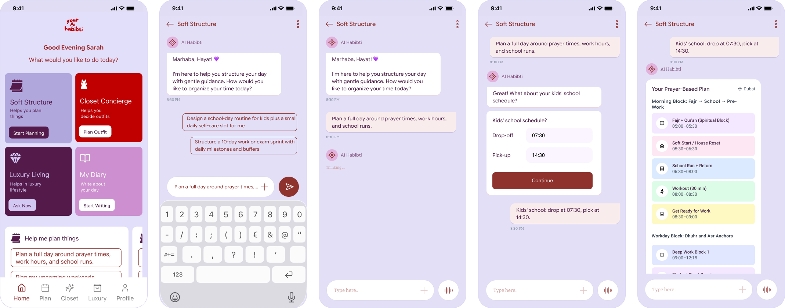
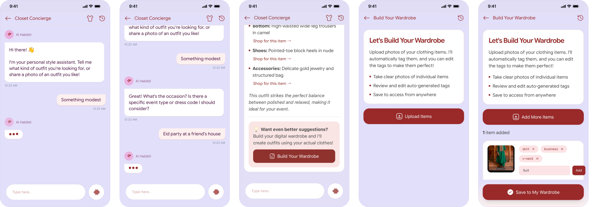

Four modules, one home base — Home, Soft Structure, Luxury Living, and Closet Concierge
The 30-second read
"Most AI assistants optimize for efficiency. Habibti optimizes for something harder: trust — cultural fluency, emotional resonance, and clarity without harshness."
Chapter One
Not a productivity problem. An orchestration problem.
The primary research was commissioned by the client and fielded by a specialist agency panel — a structured survey of 2,000 women across MENA, South Asia, and the diaspora. I designed the module-prioritization instrument that ran inside that survey and synthesized the full dataset into the MVP scope and sequencing decisions.
85.3%
Said current lifestyle tech doesn't fit how they live — not because the tools are bad, but because they were built for someone else.
79.1%
Wanted help with errands, to-dos, and plans — but had no clear system to hold it all.
72.8%
Repeatedly faced "What do I wear for this?" as a high-frequency decision they needed help with.
The invisible second shift
Women globally spend approximately 2.8 more hours per day than men on unpaid care and domestic work (UN Women). A neutral, task-only tool will always feel insufficient — because the job isn't tasks. It's orchestration.
Middle East travel market hit $101.2B gross bookings in 2024, with online penetration continuing to grow.
Phocuswright
Women's apparel in Middle East & Africa projected to exceed $88B by 2029 — modest fashion and cultural preferences explicitly cited as drivers.
Research and Markets
Internet penetration in Saudi Arabia at ~99% (2024) — mobile-first lifestyle products are default behaviour, not aspirational.
DataReportal
The gap isn't a missing feature. It's a missing frame.
No existing tool covers all five; most cover one. The competitive gap isn't features — it's framing. General AI is powerful but culturally generic; productivity planners optimize schedules but not identity-led decision load; niche apps solve a slice, not the ecosystem. Habibti's wedge is better defaults and better trust design — not better AI.
Chapter Two
These aren't marketing profiles. They're interface routing decisions — they change what gets foregrounded, how suggestions are phrased, and what counts as "done."
Layla
Fashion Curator
"I know my style. I just need help executing it — fast, and for the right occasion."
Closet as default first door. Wardrobe upload as first-session priority. 2–3 options, not a grid. Pre-loaded prompt chips.
SDT · Relatedness HIGHNour
Boss Lady
"I don't have time to feel organised. I need to actually be organised."
Soft Structure foregrounded. Short input flow. Additive re-plan framing. No streaks or guilt mechanics.
SDT · Autonomy HIGHSara
Mom Life
"Everything I plan is for someone else. I just need one thing that's quietly on my side."
Non-aggressive empty states. Care-framed re-plan prompts. Closet → Soft Structure handoff. Zero punitive UX.
SDT · Relatedness HIGHESTTwo problems revealed themselves — the system problem (→ Soft Structure) and the decision-fatigue problem (→ Closet Concierge). The opportunity wasn't "introduce planning." It was to collapse five tools into one home base that actually understands them.
Module prioritization matrix — persona needs mapped across candidate modules and hero use cases
"The research didn't validate an idea. It forced a sequence. And the sequence is the product."
Chapter Three
Four modules. One system. Multiple doors in.
Directions I considered and moved off
The failed directions matter — they're what made the final sequence defensible.
Lead MVP with Digital Majlis (community-first)
57.9% modeled paid interest in community made this tempting as the "hook" module. Dropped because a trust product cannot be the entry point on day one — community requires trust the product hasn't earned yet. Kept in the design system, deferred from MVP.
Personas as marketing profiles (demographic segmentation)
Initial framing treated Layla, Nour, and Sara as archetypes to sell against. Reframed after forced trade-off testing into interface routing rules that change what gets foregrounded, how suggestions are phrased, and what counts as "done." The framing change unlocked the personalization system.
Ship all 8 candidate modules as a full ecosystem
The client's initial framing was ecosystem-scale from day one. Forced trade-off testing surfaced that Closet + Soft Structure alone carry 84–86% top-3 presence — narrowing to a 4-module MVP made the sequence defensible and cut ~50% of build scope.
I designed the experience from journey → flows → system rules, including the operational layer needed to run it: end-to-end user journey and modular navigation, onboarding and personalization logic, and core flows for the two daily-use wedges, Closet and Soft Structure. The research was commissioned by the client; I designed the module-prioritization instrument, synthesized findings, and translated them into product structure alongside the PM.
42.1%
First-pick rate for Closet Concierge in forced trade-off testing.
86.1%
Top-3 presence for Soft Structure — highest cross-module relevance.
69.2%
Stated Pro conversion intent (survey-modeled; directional, not a forecast).
System journey — entry → context → decompose → allocate → review → execute → re-plan
Entry & intent capture · text, audio, visual input
User opens Soft Structure and selects a use case or writes a free-text request. The system parses goal (what), timeframe (when), and scope (who: self, kids, family, staff).
Context & constraints gathering · AI at work, backend
Auto-fetched
Dates from the in-app calendar, existing events (work, school, appointments), prayer times, and saved routines (Ramadan mode, work template, summer mode).
Asked only when missing
Free/blocked time windows, energy preference, hard deadlines, and recurrence (one-off vs weekly/monthly/seasonal).
Decompose goal → tasks & blocks · AI at work, backend
Intent breaks into atomic items — tasks, supporting prep tasks, and time blocks — each tagged by type (home, work, study, spiritual, social, beauty, admin), effort (small/medium/heavy), flexibility (fixed/flexible/droppable), and location.
Time & structure allocation · AI at work, backend
A timeline is built around anchors (prayer times, fixed events, school/work) and free windows. Fixed items stick or back-plan from deadlines; flexible items fill windows respecting effort, energy, and load caps; location tasks group into "runs." Global caps limit heavy tasks and trim Ramadan/low-energy days.
Plan generation & artefacts · AI at work, backend
Calendar blocks (with optional external sync), interactive to-do lists and recurring-routine checklists, multi-stage reminders for long-horizon tasks, and saved recurrence templates ("Ramadan day," "Thursday Reset," "Side-Hustle Evening").
Review, edit, confirm · interactive
A compact day/week summary lets the user drag blocks, change durations, add or delete tasks, and toggle "strict" vs "soft" adherence (which shifts reminder tone and rescheduling rules). On confirm, the plan locks as Active.
Execution & tracking · interactive + backend
The user marks items done, skipped, or partial. The system logs completion, overruns, and skipped patterns — and for routines, learns which parts get skipped to feed future suggestions.
Plan vs reality reconciliation & re-plan · interactive + backend
At end-of-day (or on demand — "I couldn't finish today") the system surfaces incomplete items, asks which to drop or keep, and auto-reschedules kept items. A low-energy one-tap mode trims today to essentials, moves the rest forward, and swaps in gentler tasks or rest blocks.
Two daily-use wedges, one lifestyle concierge, one companion loop.
MVP Flow 01
The planning backbone, including Travel Concierge. Cultural fluency here isn't a theme — it's a planning primitive. The system plans around prayer times, work hours, and school runs as defaults. "Between two prayers" is a valid focus block; Friday prayer and family lunch anchor the week, not a generic Monday reset. Travel lives inside Soft Structure because travel is a planning moment, not a separate product. When a plan gets compressed, the system surfaces "here's what still fits today" — never an error state. The framing is always additive.
Soft Structure — backend journey with LLM context, permission gates, and system learning

Soft Structure screens — from prompt chips to prayer-based daily plan
Travel & Packing — destination context → itinerary → wardrobe cross-reference → packing
MVP Flow 02
High-frequency decision offloading for a job that repeats multiple times per week, carries real social stakes, and is deeply culturally coded. Capture context fast — occasion, constraints, vibe — without long forms. Start from what the user already owns. Return 2–3 confident outfit options, not a scroll grid. Hand off into Soft Structure when the moment becomes execution-heavy. The wardrobe loop compounds: the more the user saves, the more accurate suggestions become — value without adding features.
Closet Concierge — context capture → wardrobe check → AI styling → feedback loop

Closet Concierge screens — request → occasion → styled result → wardrobe builder
MVP Flow 03
Covers the moments where the real question is "How do I show up correctly?" — etiquette, gifting, hosting, and taste in high-stakes social situations. Concise, confident guidance that feels like a trusted concierge, not a search engine. One clear answer, delivered with authority. No scroll.
Luxury Living — three entry paths (shopping, etiquette, lifestyle) with a shared feedback loop
MVP Flow 04
How Habibti becomes a companion instead of a tool. Reflection creates continuity; continuity creates return; return creates ecosystem permission. Intentionally low-friction — a gentle prompt, a short response, a personal record that builds over time. The product starts to know who the user is becoming, not just what she needs to do today.
Onboarding captures time zone, language, routine shape, personalization depth, and dietary restrictions. Those choices feed a rules engine that determines tone, homepage block order, keyword layer, and AI response style — enough signal to make the product feel personal without a heavy setup cliff.
Designing solo — with AI in the room
I used AI at four specific points: pressure-testing edge cases per flow before FigJam (the "wait, what happens when…" role a second designer plays); killing wrong directions in words before building them; drafting microcopy for complex states to react to and improve; and pre-engineering review to surface spec ambiguities before they reached a developer.
Before any persona work, I used AI to challenge the behavioral clusters I was building — not to generate them.
"AI didn't make the design decisions. It made the space to make better ones."
Chapter Four
Attribution
Primary research commissioned by the client and fielded by a specialist agency panel; I designed the module-prioritization instrument. Colour scheme and basic design system provided by the client; I tokenized them into a scalable component system in Figma Make. AI used for scenario pressure-testing, structured disagreement on early clusters, and microcopy first drafts. All product decisions — MVP sequencing, journeys, personalisation, onboarding, trust design, operational requirements, and execution — were led and delivered by me.